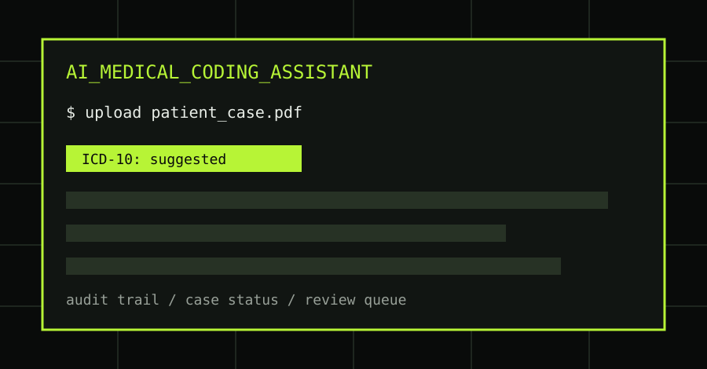
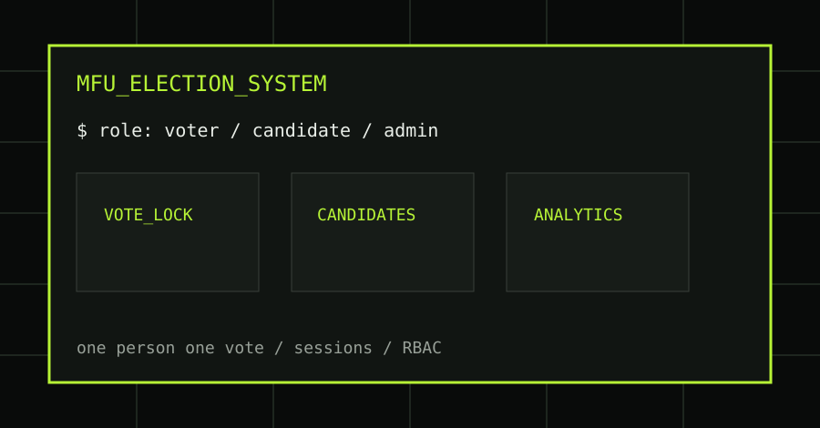
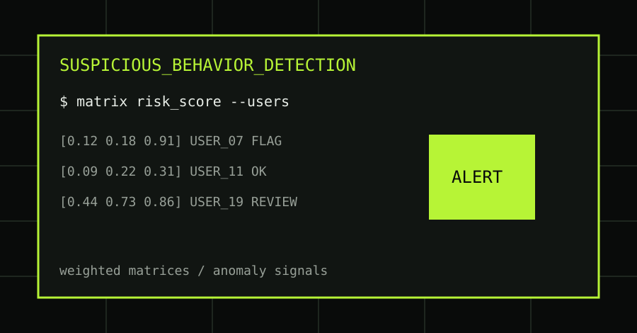
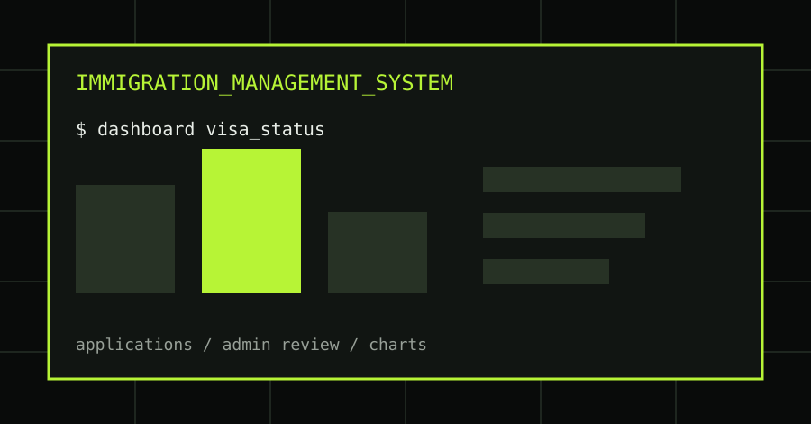
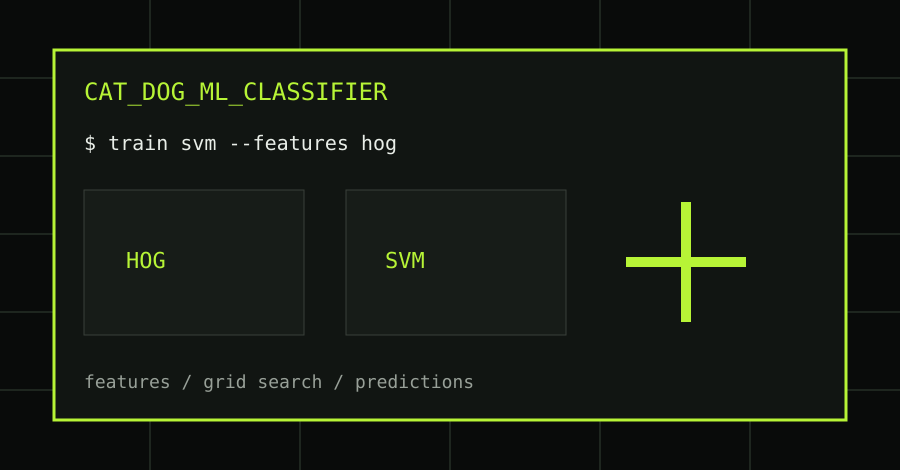

01
AI Medical Coding Assistant
A healthcare workflow for uploading patient cases, generating ICD-10 and ICD-9 coding suggestions, reviewing diagnoses, managing case status, and maintaining an audit trail.

README.md / updated 2026
$ cybersecurity student / builder / researcher
I investigate systems, build practical tools, and turn what I learn into clear security content. Currently studying computer engineering and growing Ech Tit, a learning community for the next generation of ethical hackers.
01 / PROFILE
thu@portfolio:~$ cat about.txt
Hello. I am Thu Rein Oo, founder of Ech Tit and a cybersecurity student with a particular interest in digital forensics, security research, networking, and practical software development.
I learn in public through articles, technical walkthroughs, videos, open-source projects, and notes. My goal is simple: understand how technology breaks, document it responsibly, and help more people build useful security skills.
STATUS: OPEN TO OPPORTUNITIES
Seeking cybersecurity internship, SOC analyst, junior security analyst, digital forensics, and practical software security roles. Preferred work: security operations, incident triage, forensic investigation, vulnerability research support, and full-stack security tooling.thu@portfolio:~$ _
02 / SELECTED WORK
01
A healthcare workflow for uploading patient cases, generating ICD-10 and ICD-9 coding suggestions, reviewing diagnoses, managing case status, and maintaining an audit trail.

02
A role-based election platform for voters, candidates, and administrators with session authentication, one-person-one-vote enforcement, candidate management, and election analytics.

03
A security analytics workflow that models system activity as matrices, applies weighted risk scoring, flags anomalous users, and provides a foundation for future machine-learning detection.

04
A complete visa application platform with secure user and admin flows, application status management, record search, and real-time dashboard charts.

05
A computer-vision pipeline using HOG feature extraction, an SVM classifier, grid-search tuning, model evaluation, and prediction on unseen images.

03 / CAPABILITIES
Digital forensics, blue-team foundations, threat intelligence, network security, and ethical reconnaissance.
Python, Java, C#, JavaScript, Shell, HTML/CSS, command-line tools, web apps, and Unity projects.
Research notes, technical articles, CTF walkthroughs, learning videos, and community-led training.
STACK: Python / Java / C# / JavaScript / Shell / Linux / Networking / Git / Unity
04 / WRITING & RESEARCH
05 / EDUCATION & CREDENTIALS
CURRENT
Mae Fah Luang University
Continuing an academic path across engineering, systems, and security.COMPLETED
NCC Education / Twinkle University
Advanced computing study with a focus on cybersecurity knowledge and practical responsibility.COMPLETED
NCC Education / Twinkle University
Core study across computing, software development, systems, and professional practice.SELECTED / JOB-RELEVANT
Red team operations credential for offensive security methodology and operator mindset.
view certificateRed team analysis credential showing practical attack-path thinking and reporting discipline.
view certificateCybersecurity analysis credential aligned with SOC, investigation, and threat triage roles.
view certificateCyber threat training credential for intelligence-led security and threat awareness.
view certificateNCC Education diplomas covering computing foundations, development, and professional practice.
view certificateComputer science foundation with programming, algorithms, systems thinking, and problem solving.
view certificate06 / END OF FILE
Open to cybersecurity internships, junior SOC/security analyst roles, digital forensics opportunities, security research support, and practical software projects.
thureinstudent18@gmail.com